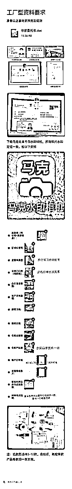
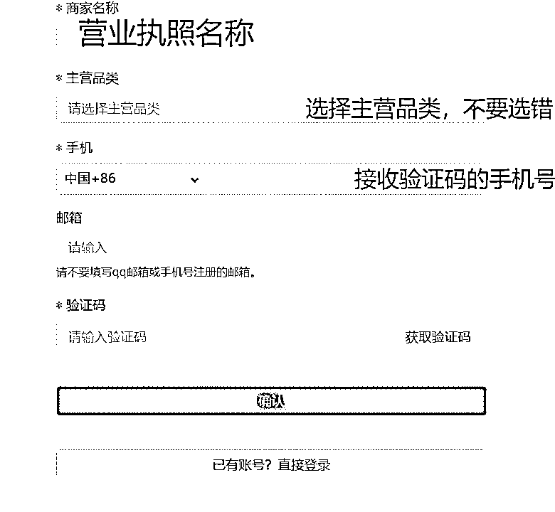
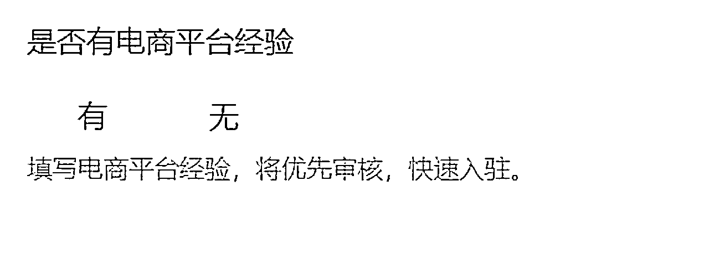
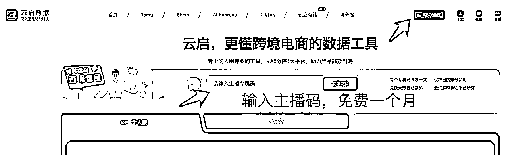
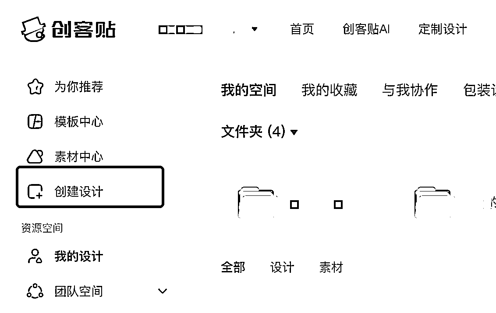

来源：https://yoyxm8hqv4.feishu.cn/docx/DaAod9SlroFMCix4sWfcDpdPnvg
Hello大家好~ 我是生财四年圈友、生财航海家Emma梦婷。从2021年辞职创业以来，就一直在生财的精华帖里浸泡，后来入了航海家以后，更是受益匪浅，听了很多前辈掏心窝子的分享，帮我疏通了很多创业上的卡点。
一直很想回馈生财，刚好秀儿邀请我做本周航海家大会SHEIN场的夜话官，又恰逢小善团队SHEIN首场航海拉开序幕，让我看到各位圈友对希音全托管电商的热情如此高，心想那刚好借此机会，把自己做希音的心得和方法也整理分享出来，让没能上船的圈友也可以照着本文干起来~ 于是就有了今天的这篇文章。
文章有点长，从希音大的背景介绍，到我们每月持续被评为希音平台优质商家所做的各种落地运营细节，以及过程中用到的工具和使用方法，都有涉及。
简单说一下我的背景，大家就会明白之前的我在电商这事面前有多小白。我能在希音平台拿到结果，一方面是自己有行动有思考，但更多还是因为平台的红利。
我是90年的金融IT女，连续创业者，但是之前的创业项目在生财里面多少有点另类：先是在2016年从国企裸辞，做了8年的青年公益社群，主要的业务就是带领青年人在工作之余做公益；后来因为互联网人猝死新闻变多，我就开了家中式健康餐饮外卖店，后来被几家企业看中转型做了团餐。
「想在做公益的过程中认识世界和找到自己」「想要做更健康的中餐，呵护互联网打工人的胃」这是我之前2次创业的原因，可以看到我之前的创业项目都很偏情怀，不够成熟理性，所幸没吃啥大亏，团餐项目盈利还不错。
但是2021年再次辞职创业的时候，一路的苦就没少吃，没多久就濒临倒闭。
2019年自己生了孩子当了妈，因为宝宝湿疹敏感晚上睡不好，我经历了长达2年的产后抑郁。
自己走出阴霾以后，就满怀热情想做一个能改善新手妈妈睡眠质量的母婴品牌，当时也是无知者无畏，不知道品牌创业的难度，带着自己所有的积蓄和领导同事的投资，就孤身一人就冲进了这个行业．
当时的我对电商的认知浅薄到什么程度呢？我请工厂帮我在双十一之前生产好商品，想赶在双十一之前上架，我以为这样就能借双十一的消费热度大卖。当时的我完全不懂淘宝网店的竞争激烈程度，不懂运营、不懂投流、甚至都不知道要刷单刷评价。
这个就是３年前我对电商认知可怜的起点。
我的品牌创业项目快活不下去、我犹豫要不要再回去上班的时候，我用最后仅剩的几千块钱赌了一把，参加了一个号称母婴界最大的展。有幸在展会上收到了希音招商的名片，可以说这次创业生死的转折就从做了希音全托管跨境电商开始，我幸运地活到了现在，并且拥有了一个４人全职＋Ｎ个兼职的小团队。
从23年7月上架第一款商品开始，我们希音的销量就经历了一个迅速上涨和长时间稳定的状态。我们当时毛利在30-40%之间，从上架的第二个月开始，利润就破万，并且直到现在一年多了，这家店都一直稳定在5-6万的毛利。
这对于社群里面一些抖音或者亚马逊大佬来说，这个利润和GMV其实不算什么，但是我的数据和经验背后有两点值得关注：
第一是希音全托对人的能力要求真的低。你看我从7月份开店传第一款商品开始，上架即出单，我根本没有经历什么摸索期成长期。而且在月利润5万之前，我就是一个人兼职搞，当时主业还是做我的原创小品牌。在月利润看起来很稳定以后，我才招了一个0基础的全职，这个全职他是我之前开餐饮店认识的外卖小哥，电脑操作都是我现教他的。
第二是希望你看到更大更火的类目的潜力。我们这个店做的是一个细分的一个小类目，从希音大盘来看，这个类目的流量和销量都远不及女装、饰品、百货这些大的类目。后来学员用我们的经验和方法复制出来的其他类目的店铺，数据增长比我们这家店更可观。
图一图二同一人
简单一句话概括希音：它是一家极其低调的、以快反女装起家的跨境电商独角兽公司，2024年胡润全球独角兽榜单上，希音排名第五，是仅次于字节、马斯克SpaceX、OPENAI和蚂蚁集团的超级独角兽企业。
SHEIN和速卖通、Temu、TikTok Shop这四个电商平台并称中国跨境电商四小龙，但是shein希音公司的行事风格和他的创始人许仰天一样，都特别低调。这个低调程度从抖音上的话题数量和生财的帖子数量上就能大概看出来。
为什么会这样呢?
一方面是因为希音公司和它的创始人在国内都很低调, 市面上对于他们的采访很少; 另一方面之前希音的入驻门槛相比temu来说很高, temu只要有个身份证就可以开店，但是shein需要工厂资质或者电商型资质（最开始要求年流水大于300万）才能开通。你看我知道希音是因为我参加了展会，是个展商的身份，并且展品不错，才收到希音招商的名片，所以入驻希音在前几年是一个相对封闭的事情。
但是随着temu在海外抢夺shein的市场，shein为了正面对抗temu，也慢慢放松了入驻的门槛，并且开始全品类招商，所以才有了更多非工厂非电商或者小电商的普通人入局的可能。
↑shein电商型卖家入驻要求已低至30万年流水
这个问题很多朋友问过我，我谈谈自己粗浅的认知，欢迎走过其他平台较长生命周期的前辈出来指正。先抛开全球跨境电商业务的增长这个相对的共识不谈，只从希音本身和它的直接竞对temu来看。
第一从希音本身的发展来看
希音正在英国寻求上市，根据kimi帮我们总结出来的上市流程进度表，希音最顺利的情况下，预计在25年的第三季度完成上市，按照公司上市的一贯操作来看，上市完成前，希音公司本身会大力推动各方面数据的持续增长，商家在这个期间也是能吃到平台数据增长带来的红利。
所以未来一年希音明确的红利信号是稳的，剩下的我们再来看第二个维度。
第二从和竞对temu的商家数来看
从抖音上希音博主数和temu博主数的数量对比，和生财精华帖中shein和temu帖子的数量对比的数据中，相信大家不难发现，现在谈论希音的人真的很少。
从身边人的情况来看，希音卖家和temu卖家数量的比例没有1:50也有1:30。原因就是上面说的，希音之前很低调并且门槛高。
「2023年第四季度，Temu流量达到11.9亿次，而希音是6亿次」（数据来自kimi）
temu四处砸广告超级猛，截止23年底流量是希音的2倍，但是从较大的商家数差异来看，我认为希音的红利起码在两者商家数比例趋于流量比例（1:2）的时候结束。
综合这两点考虑，现在入局希音是非常明智的选择，吃到肉挣到钱的概率很高。
希音和temu都有全托管模式，平台的目标人群一致，这两家的很多政策也都是相互跟进的，人员在两个公司之间也有流动。
但是两个平台做下来，我更倾向做shein。我分享一下我眼里它们两个平台的几点区别：
一是希音的后台好用，数据详尽，尤其是财务这一块，每天出库的产品、数量、时间、销售的价格，都有。而对不清楚账，是temu卖家的一个通病。
二是在线客服和买手，能联系得上，能建立沟通：希音的Q&A板块做的挺好的，学习中心也很有逻辑，新商进来以后完全可以自学。在线客服回复也很及时，像我们是优质商家，在线客服基本上是秒回的。企微的商户群也不禁言（temu大部分群是禁言的）。这对小白就很友好，有问题了起码有地方去学去问，去反馈。
↑Q&A和人工客服板块
↑学习中心课程详尽有逻辑
三是扣罚有依据，客诉不偏信，讲道理：这点也是最让我愿意去大力推荐身边人做希音的根本原因。我做temu半托管的时候，卖了5件商品，就有一件仅退款，注意是半托管哦，成本很高，一件的物流成本+产品本身的成本在200-300元，物流显示签收，顾客说没有收到要仅退款，temu只给了24小时的申述时间，我们压根就没看到退款提醒（平台在首页上没有提示、app端没有提示，更别说有买手来联系我，退款隐藏在发货物流页面里面），等接到temu的电话，我们找到退款的记录时，temu都已经退了。
但是希音这边，无论是质检、稽查、客诉还是违规，都足了申述期，而且在首页会明确提醒你处理，一登录就可以看到。
↑首页就有退供、质检、扣款待处理的明确提醒
↑申述时间给的很足
我印象很深刻的一件事是，7月份的时候我们有个客诉，顾客收到后复量说商品尺寸不对。按照当时的希音规则会引发在仓库存的批量退回+最少1000元的质检罚款。
但是买手在群里联系我们了，我们解释以后，买手觉得在理，之后就没有退货和罚款。
↑买手联系我，提供了顾客的投诉截图，让我们自查
↑我们回复后，买手复核觉得有道理，后面没有退货和罚款
做temu和希音截然不同的体验，让我更信任希音这个平台，同时也看好希音平台未来的发展，也愿意在上面持续深耕，和平台一起成长。
大家从我的故事不难看出，我丝毫没有谦虚哈哈，我是真从电商小白起步走到今天。所以你问我希音全托管适合的人群，我真心觉得咱们得圈友都可以尝试（下一章内容有具体说原因），我身边像70后的小工厂老板、开美容院的年轻妈妈、实体店女老板副业兼职搞，在实操1-2个月以后，都拿到了一个月最低几千毛利的正反馈。
如果你一定让我画条线，圈个人群，那我觉得最低要求有两个：
第一：会用电脑。具体要多会呢，起码我下面第六章教的安装插件啥的，你要能自己搞定。我相信咱们的圈友都没有问题。
第二：在前2个月，需要保证日均1小时的时间投入。
下面我来详细讲讲为什么。
shein全托管模式有多轻呢，轻到很多人认为这根本就不算是跨境电商。
为什么这么说？
第一运营流程简单
不需要我们负责多语种的客服，不需要我们负责跨洋的售后，不需要我们负责国际物流，甚至连系统后台都是中文，整个过程只有选品环节，你需要使用魔法🪜去看海外网站，除此之外，做全托管跨境电商真的是一点「跨境」的感觉都没有，环节很简单，过程很丝滑。
↑希音全托卖家和平台的分工
别说是新手入局跨境最轻的模式，在国内各种电商模式下，希音的全托管也可以说是很轻、对个体能力的要求很弱的。相比国内短视频电商、直播电商和传统的货架电商，不需要一直拍图拍视频来获取流量，不需要露脸刷夜直播，也不用扮演24小时的客服和处理售后，更不用花钱投流、刷评论
当然，shein全托不是十全十美。对比国内电商平台，希音全托涉及到客诉和质检稽查罚款的可能性，这也是temu全托管闹得沸沸扬扬的原因之一。但是我们做了一年半，因为客诉和质检罚款总金额不超过2000元人民币。后面也会提到我认为希音和temu全托管最大的区别，就包括了罚款这部分。
第二资金和囤货风险小
一说到跨境电商，无论是做独立站还是亚马逊，无论是货在国内还是海外当地，都需要先囤货，特别是海外本土的那种模式，一次性发一批货过去，货的成本+海外仓按美元收的仓管费+卖不出去花美元请别人处理库存，都是费用，对于0基础的小白来说开局就是一笔五位数的投入。
但是全托管这种模式不需要。
商品上架以后，只需要从1688那里采购3-5件产品回家，再发到希音在国内的中转仓就可以了。看你选择的产品的价格，试错成本最低可能只要几块钱。

以上对比图来自我个人经验和与圈友的交流结果，也欢迎圈里的相关赛道的大佬补充指正。
说了这么多关于希音全托管跨境电商的好处，接下来手把手教大家怎么操作。我的撰写目的是大家看完这一篇，就能实现从0-1完成希音全托管的第一单，挣到第一块钱。
如果你刚好自己有或者亲朋有国内外的电商店铺或者工厂，那恭喜你，完全可以自己来申请开店。（下面部分内容引用自我和希音官方招商经理对话的图片）
自主开店路径：https://seller.sheincorp.cn/，需要准备的材料：

准备好材料后，就可以开启自主申请的道路了。
首先登录入驻官方链接：https://seller.sheincorp.cn/，模式这里我们选择代运营模式，就是所说的全托管。
内容填写上有几个要点：
①带*号的必填，不带*号的可以不填或选填。
②主营品类就写你最想做的类目：

③地址这里要填写营业执照地址，如果和营业执照地址不一致会被驳回。
④邮箱推荐163、谷歌等游览器邮箱，QQ邮箱不能用
⑤推款清单也就是产品报价单，在模板里上传不低于20款的主营产品或新款（审核人员看款式），附上产品图片及供货价（不含税不含运费的供货价），供货价高会驳回。
⑥电商经验是工厂型营业执照选填，贸易型营业执照必填：

⑦销售额截图，截整图，不要只截一部分，露出四周，露出店铺名称（不带店铺名称会被驳回，特殊平台可分两张上传）
⑧场地图须使用水印相机（例如马克相机app）拍摄图片，否则会被审核驳回：
希音和temu的目标受众一致，都是美国的中产以下人群，但是temu的门槛低、商家多，商品更新快，所以做希音全托我们的第一个的选品思路就是对着temu选，其次再是其他海外电商平台。
推荐我常用的2个工具和用法。
免费！
咱们做全托管，主打一个经济实惠，就用它免费的功能就足够。地址：https://www.geekbi.com/。
用极鲸云主要用它的这个浏览器插件，点这里安装，把希音和temu的插件都装上。（最好用google浏览器哦）
直接点击安装插就可以：
安装好以后，它可以帮我们做2个事情。
一个是可以方便的用图搜款，一键找到1688的供应商，还可以一键去搜寻希音是否已经有同款：
另一个功能，就是在temu或者shein的网页上，我们可以看到每个商品的上架时间和销售的数量：
收费的，但是有主播码可以免费一个月，羊毛先薅起来！地址：https://www.yunqishuju.com/?spid=850688 主播码:850688

这个云启数据我们一般这么用：看temu，再筛选左侧的商品库和店铺库，商品库可以直接看到爆品榜、热销榜和新品榜，筛选榜单再筛选自己的类目，就可以快速找到temu该类目下的商品和数据。再配合极鲸云使用，一键找到1688供应商~ 也可以选择店铺，跟进某家店铺的选品。
两个工具，不一样的数据侧重，搭配起来做希音全托的选品，很顺手~
使用上面所说的极鲸云插件，我们不愁在1688找到图片同款的供应商，更多时候愁的是同款的供应商太多了，不知道怎么找到最低的那一个。
分享两个筛选的小技巧：
一个是价格从低到高：这个很好理解
另一个是销量从高到低：你要相信广大人民群众的眼睛是亮晶晶的，但凡一个链接它的价格不是最低、但是销量却是最高的，那一定有猫腻，尝试跟这样的供应商去聊，价格一般都有可谈的空间。
选好品、找好货源以后，咱们从1688上直接下载图片，用美图秀秀、创客贴这样的简易图片处理工具，简单处理下图片的尺寸，让图片符合希音的要求。【也有一些专门的工具在这一步可以提高效率，这次先从最基础的步骤开始，这样小白用自己常用的图片处理软件就可以办到】
上图是希后台商品上架的图片要求其中，主规格图是必填，要求方图或者1340*1785px的长图；详情页是非必填的（看到了吗？希音全托的图片要求真的是很简单！连详情页都不是必须的，头图就可以了）
只要是可以处理图片尺寸的软件都可以，我用创客贴为例，演示下图片处理的过程。
首先，创建设计：

1688的图片一般制作方图会比较方便，我们选择希音的方图像素要求上限2200px，输入以后，创建设计。
我们从1688上下载或者截图需要的图片，希音每款商品最少需要5张图，其中必须要有一张尺寸图：

保存好图片以后，我们在创客贴这里上传图片，上传成功后会显示在下方图片栏里：
逐张拖动目标图片到右侧的空白页面处：
像这样有中文字的地方，我们可以用贴纸遮挡，或者用有底色的文字框输入英文后遮挡：
将图片全部拖拽进去，处理好以后，我们点击右上角的下载，因为希音对单张图片的大小有要求，需要小于3M，所有我们要改一下：
下载完毕以后，就可以用图片在希音后台上架。
希音商品审核分为以下几个环节：
其中寄样、审版和核样环节只有部分类目部分产品需要。当你的商品审核通过以后，就会流转到待上架一栏：
1688的货品到了以后，就可以上架产品，等待出单。希音的订单分为两种类型：急采单和备货单。
急采单是J开头的：一般在新品前14天产生，这个阶段我们无需把产品发到希音中国的中转仓，就可以先上架展示，有消费者购买付款了以后，咱们再通过快递发到希音中转仓，再由希音负责国际物流送达消费者手里。目前除了新商家有30天左右的急采运费豁免，其他商家都要自己承担急采的国内运输费用。
备货单是B开头的：在新品14天过后，希音就要求在国内的中转仓有货，有货才能在前端正常售卖，否则消费者要么看不到你的商品，要么就是售罄无法购买的状态。除了个别类目，备货单的快递运费都由希音承担。
有订单了以后，需要按照不同类目的要求，在商品上打印和粘贴几种不干胶后再发货。这点是和国内电商一个最大的不同。
一般最少需要打印和粘贴三个不干胶，一个是环保标，一个是商品条码（如果是纺织品或者电器类商品，需要打印和粘贴的条码会再多1个洗水标和1个电子电器类标签），这两个是需要像上图一样，贴在产品的最小包装上；还有最后一个是面单，贴在包裹最外面。
希音后台操作预约好物流后，剩下的就是等快递小哥上门取件就好~
走到这里，恭喜你，你的希音全托管第一单就搞定啦！跨境电商从0-1的这一步算是迈出去了~
随着全托管平台单量越来越大，各个国家对入境的商品也有严格的要求，这也是全托管电商可能会有较高罚款的原因，从避免违规被罚的角度，下面几个类目不建议新手和没有资源的人碰：
①高合规类目：电子电器、珠宝、童包 、童鞋 、童腰带、婴儿安抚奶嘴与配件、婴儿餐具、婴儿辅食容器、婴儿奶瓶及奶嘴、儿童珠宝、儿童玩具。
以上类目不是说不能做，只是不建议新手和没有自有货源的人做，因为对商品的质检和抽检要求很严格。哪怕你有证书，但是也无法避免后续平台的抽检，如果抽检不合格都会面临1万/次的罚款，切记切记，不要做。
②低质量、易有划痕压痕的塑料制品
这个类目的仓库质检简直变态，几块钱的东西要求特别高，不能有毛刺、不能有划痕，在仓库质检环节不罚款，但是仓库退给你的概率很高，不建议做。
以上就是我做希音的一些心得，和我整理的对于新手小白从0-1做希音不得不知道的一些内容。当然，篇幅有限，如果大家还有疑问，欢迎在评论区里交流！
感恩能在生财的土壤里生长，希望自己的总结和分享能够给大家启发，国内太卷，让我们一起放眼海外，从希音全托管最轻的模式开始，逐步把货卖向全球~